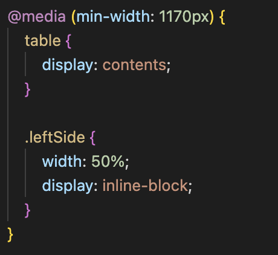
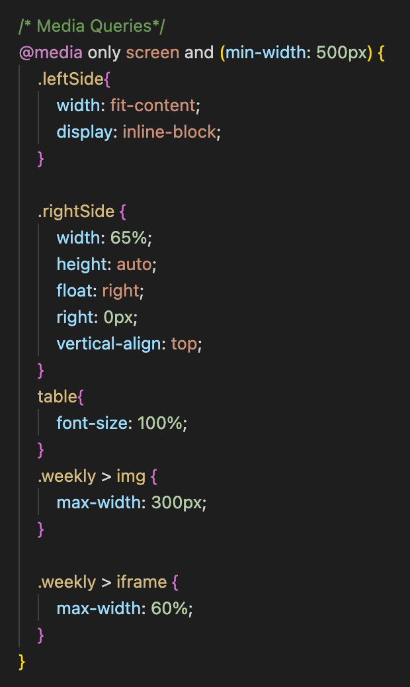
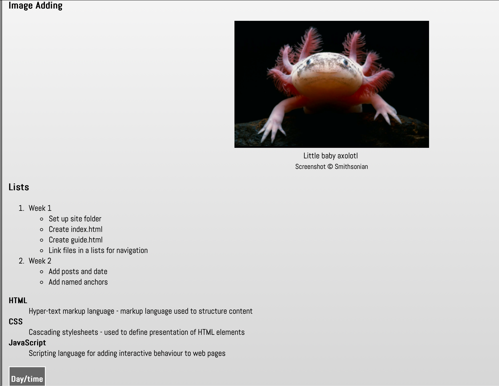

This week, and everything until the assignment is turned in, is just tidying up the website and code to make it
effective and efficient. This week will contain a list that just states what I have worked on in preperation.
Making sure images have alt text.
Fixing up the contact.html so it looks amazing.
Trying out some new layout ideas. Didn't like them.
Validating my HTML and CSS.
Week 9 - HTML Forms and Styling
Published on
I did a lot of work this week. Over the weekend, I watched a video that helped me use some new techniques in
CSS. I worked on my "Contact Me" page and it now has a non-functioning form for people to contact me for when it
does work. I also made it to where images and videos hide themselves when the screen is too small, which may or
may not be a good idea. We'll find out.
Week 8 - Responsivity
Published on

I made the timetable go to the right and the navigation go to the left. The timetable
dissapears on smaller windows now too. The font sizes for everything are now based solely upon just the 'px' set
in body. The website is now a better responsive site and should provide better user experience.
I also found out that safari has a responsive website mode so I can see how my website will look on other Apple
devices.
Week 7 - Flexible Media
Published on
This week, we learned how to make it to where an image and videos with an iframe element can scale
with the size of the image.
I added a bit of that into my CSS but not much as I am very content with how my website is functioning at the
moment.
Week 6 - Making the Learning Journal Responsive
Pubblished on
This week's post is a few months late, but that was because I addressed all of the work from this week's lesson
in other posts. To be safe for grading, I decided to make this week anyways.

This week, we started responsitivity for the webpage. We approached it with a 'mobile-first' approach, which
means doing our CSS with mobile users in mind first and adjusting anything for bigger screens along the way.
We began with media queries that allows us to detect what screen-size the user is viewing on, and then make code
to change the page based on that. I used these for my table at the top of the page.
When the screen gets smaller, the table gets smaller until it can't anymore, which at that point, it adds a
scroll bar.
Week 5 - CSS II
Published on
This week saw CSS part 2: electric boogaloo. We learned some cool text stuff and how to add
external fonts. Also learned text indents and margin manipulation.
Week 4 - CSS
Published on
CSS has now officially been added. We learned this week:
Pseudo-classes for anchors and links
normalize.css and style.css
Difference between class and ID tagging in elements
Validating CSS
We also integrated normalize.css and linked it to all of our other webpages. It is there so that
if anything in our css is unsupported on a web-browser, it is still viewable.
Week 3 - More Lists, Tables, Citing, and Image Links
Published on

In this week, we did more types of lists and how to make tables. We also learned how to cite text with
cite. Tables are useful because it can make timetables or condensed similar information in an easy
to read format.
Week 2 - Anchors
Published on
Week 2 done and out. We learned how to make anchors and in text links to emails. Also added an
image of a cutle little axolotl. 10/10, would add another axolotl. Also found out resizing images is
annoying. We added more lists and such to the page to allow for a cohesive webpage to be developed
Week 1 - The Beginning
Published on
Well, we made this webpage. Quite ugly, but I'll do something about it, mark my words :)
I learned:
Set up a folder for my website on my Brighton Domains workspace
Link two pages together with a navigation menu using a relative link
Create links to external websites using an absolute link